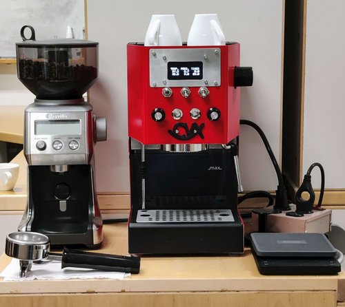

Espresso
|
 |
I modified a Gaggia Classic Pro (espresso machine) with Logan Bell, and we programmed it with Alan Yang. The machine is now outfitted with some internal hardware that allows for somewhat granular temperature and pressure control (and a much sleeker interface). Mathematicians turn coffee into theorems, and in theory, better coffee means better theorems.